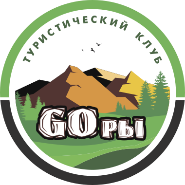

(с) Анатолъ Франс
Давно желаете увидеть девственную природу? Хотите подправить здоровье и заняться активным отдыхом?
Клуб туристов-энтузиастов "Горы" вам поможет!
Группа профессионалов с огромным опытом восхождения на самые трудные и недоступные вершины с радостью проведёт вас по целому комплексу незабываемых маршрутов самых разных степеней сложности, от простой и легкой прогулки у водопадов Краснодарского края, до, казавшимися раньше непокоримыми, пиков Эльбруса. Будь то расслабляющий поход с целью восстановления душевных сил или жесткая проверка на прочность тела и духа, мы готовы оказать всю необходимую поддержку что бы вы сами превратили свои вчерашние фантазии в сегодняшнюю реальность.
Приобретая тур, вы получаете пакет услуг в стоимость которого входят все организационные моменты и необходимые для похода вещи, такие как продовольствие, пропуска и места для ночевания. Тем не менее некоторую экипировку вам придется купить/арендовать самим.
Что входит в стоимость тура:
- Места стоянок, палатки и проживание в помещениях (если необходимы)
- Разнообразное меню составленное с учётом ваших предпочтений
- Специализированное скалолазное оборудование, в том числе и рюкзаки в турах категории "Эксперт"
- Пошлины и пропуска на территории заповедников
- Перемещение на транспорте от точки начала тура до точки окончания тура
- Хорошее настроение и позитивные эмоции :-)
Что не входит в стоимость тура:
- Походная одежда и обувь
- Вместительные рюкзаки для базовых и продвинутых туров
- Транспорт до места начала проведения тура
- Купленные во время тура сувениры
- Средства для защиты от солнца, а также средства персональной гигиены
- Пенки
Наши туры могут быть условно разделены на три категории: "Базовый", "Продвинутый", "Эксперт".
Таблицы ниже помогут вам понять какая именно категория больше всего подойдет для вас и ваших друзей.
В любом случае, это всего лишь рекомендации, а не ограничения. Если вы думаете, что не подходите для
какой либо из категорий, мы с радостью внесем правки и изменения, что бы вы получили полный спектр эмоций и ощущений от
тура любой категории.
- Способность пройти 5 км за день
- Способность нести до 6 кг в рюкзаке
- Подходит даже для детей и людей пожилого возраста!
- Хорошая физическая подготовка
- Возможность провести на ногах целый день с рюкзаком весом до 15кг за спиной
- Отсутствие болезней опорно-двигательного аппарата
- Многочисленный опыт длительных походов
- Умение использования скалолазного снаряжения
- Готовность к преодолению непредвиденных трудностей
Свяжитесь с нами и мы расскажем и ответим на все ваши вопросы лично!
Номер телефона:8-800-XXX-XX-XX
Whatsup:8-800-XXX-XX-XX
Группа Вконтакте:vk.com/gory
Электронная почта:tourism@gory.ru
